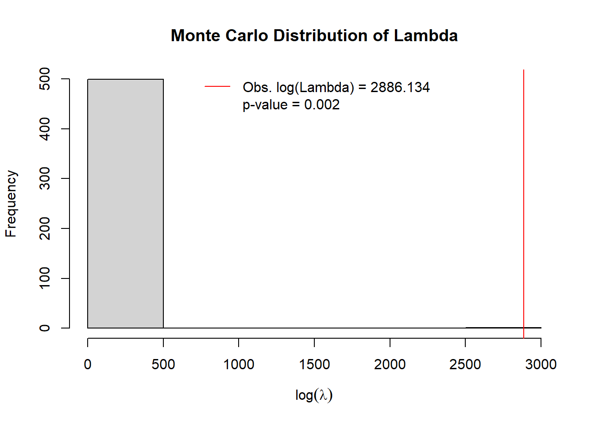
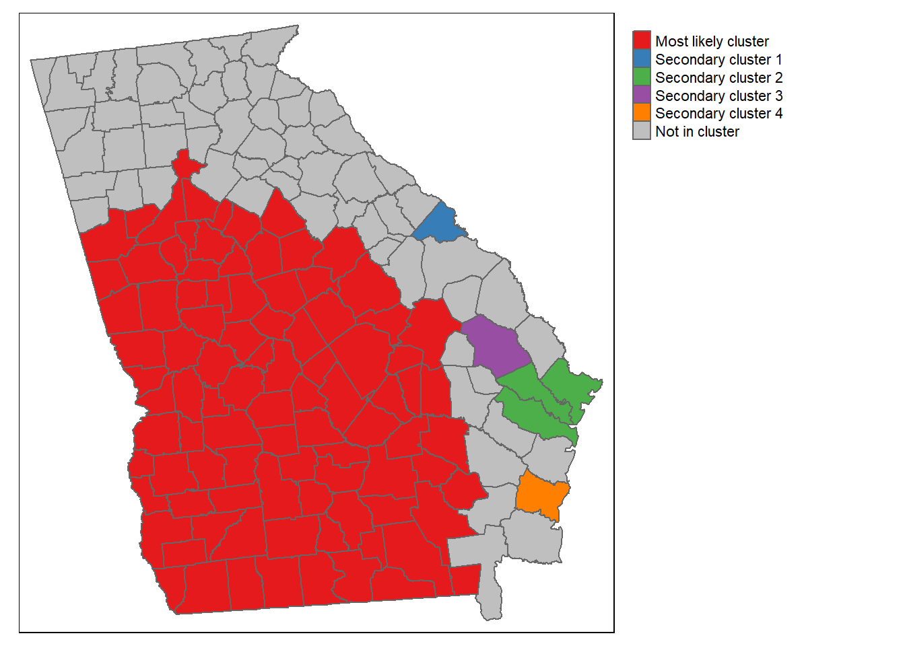
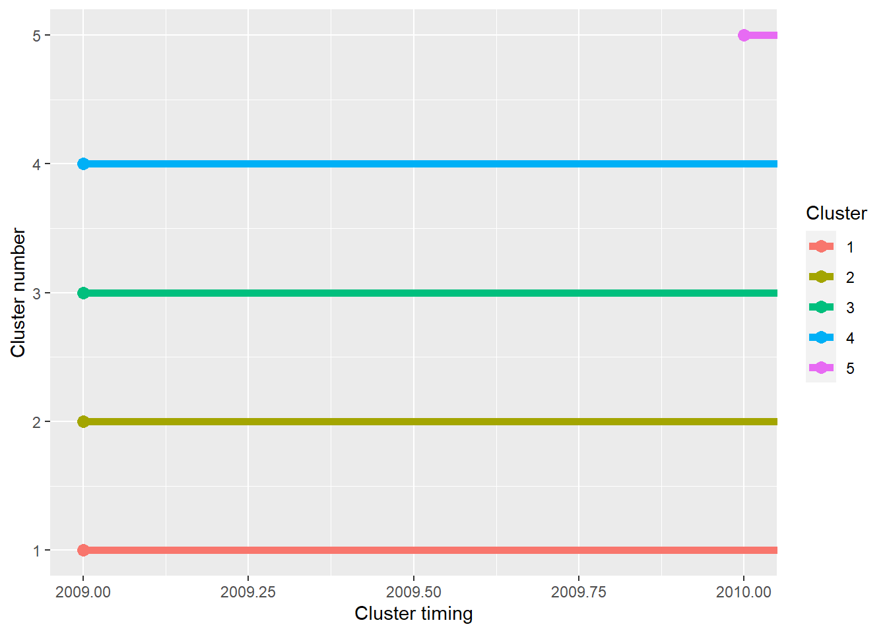

Week 9 Spatial Structure and Clustering II
9.1 Getting Ready, w9
9.1.1 Learning objectives, w9
| After this module you should be able to… |
|---|
| Evaluate statistical estimation of spatial clustering in population health to generate epidemiologic hypotheses |
| Apply spatial scan statistics to epidemiologic data and interpret results |
9.1.2 Additional Resources, w9
- Vignette for
scanstatisticspackage in R - SatScan website, supported by National Cancer Institute
9.1.3 Important Vocabulary, w9
| Term | Definition |
|---|---|
| 1st order process | Statistical measures where units taken one at a time. Spatial heterogeneity is about how the mean intensity varies for each unit, and is therefore primarily about first order process |
| 2nd order process | Statistical measures where units considered at least two at a time. Spatial dependence is about correlation or relatedness between units and is therefore about 2nd order processes |
| Global vs Local spatial analysis | Global analysis evaluates a pattern or trends that characterizes the entire study region; in contrast local analysis characterizes patterns that are unique to each sub-region of the study area |
| Spatial dependence | When attribute values or statistical parameters are, on avreage, more similar for nearby places than they are for distant places. Spatial dependence is evaluated by looking at pairs or sets of places. |
| Spatial heterogeneity | Attributes or statistical parameters are varied (e.g. not homogenous) across sub-areas in a broader region. In Disease mapping we typically are evaluating whether (and how much) disease intensity (risk, rate, prevalence) varies across places. |
| Spatial scan statistic | A test for extreme or unusual event intensity inside versus outside a varying regional window, in an effort to detect local clusters of disease |
9.2 Spatial Thinking in Epidemiology: Conceptual tools for thinking about ‘clusters’
Last week we formalized two essential questions in spatial epidemiology:
- Is there spatial heterogeneity or variation in the intensity of disease within a study area?
- Is there spatial dependency or autocorrelation in the disease rate among local sub-regions of the overall study area?
These two questions recalled a contrast that we have made in prior weeks between global patterns and local patterns:
- Global: characterization of patterns of intensity or autocorrelation for an entire study region.
- Local: characterization of specific deviations from expectation in sub-regions of the study area.
To combine these two constructs, describing global heterogeneity is to ask, “are there any areas that are meaningfully different from the constant risk null hypothesis?” Describing global autocorrelation is to ask, “on average do values in each region correlate with values in their neighboring regions?”
And by extension, describing local heterogeneity is to detect the existence of a local extreme (e.g. intensity that is significantly and/or meaningfully higher or lower than expected under assumptions of constant risk). Similarly, describing local autocorrelation is to detect specific sub-regions that are unusually similar to (or perhaps unusually unlike) their neighbors.
9.2.1 The clustering conundrum
The preceding summary of points covered over the past weeks gives us a starting point for analytically and statistically detecting and describing spatial clustering of disease. As discussed last week, this is of interest statistically (e.g. to rule out bias and error as sources of unusual patterning), epidemiologically (e.g. to characterize the occurrence of disease as part of surveillance or etiologic research), and from a policy and public health perspective (e.g. to inform public health prevention, regulation, or policy). While the constructs above help with the detection of unusual patterns, explaining them (e.g. in terms of causes, processes, and exposures) is often the ultimate goal.
So what exactly is ‘disease clustering’ and what does statistical evidence of global or local heterogeneity or dependency tell us about the generation or causes of clustering? It turns out this notion of explaining ‘clustering’ is a tricky one both conceptually and analytically.
Conceptually, we might like to distinguish between at least two kinds of processes:
- Factors about the context or the population itself that results in greater or smaller intensity of disease in one place versus another. For example environmental toxicants such as air pollution or arsenic in the water could plausibly affect all who live in the area, resulting in a higher disease prevalence. UV-exposure varies by latitude, and this partly explains differences in skin cancer and Vitamin D deficiency. Spatial variation caused by changes in the underlying property of places or populations are called 1st order effects.
- Processes of spread, contagion, or diffusion suggest that some interaction between people (or between the institutional influence within places) result in a spread or transmission of disease. This is most intuitive for infectious disease, where transmission is a function of proximity. But contagion and diffusion can occur in non-infectious outcomes as well, as seen with behavioral contagion and social norms shared within networks (e.g. acceptability of smoking, expectations about body size, etc). Spatial variation or clustering caused by the interaction between individuals or entities are called 2nd order effects.

FIGURE 9.1: Image source: https://mgimond.github.io/Spatial/index.html
The figure above illustrates 1st and 2nd order spatial effects in the context of ecology. The core concept relevant to epidemiology is that 1st order effects assume patterns are from differences in the mean intensity, whereas 2nd order effects focuses on differences in covariation or correlation. You might recognize, therefore, a parallel with our two essential questions of heterogeneity of the mean intensity versus autocorrelation among pairs of units. You may also note that our analytic strategies have been framed in the context of these distinctions: tests for spatial heterogeneity built on the null hypothesis of constant risk sound like they are evaluating 1st order effects; in contrast tests for spatial autocorrelation comparing pairs of regions sound like they are evaluating 2nd order effects.
Analytically it would be great to have a test that distinguishes clearly between these competing explanations for how the unusual spatial pattern was generated or produced. But this is the second tricky issue. Both 1st and 2nd order processes can produce patterns of disease that could be detected with either tests for heterogeneity or tests for spatial autocorrelation. Said another way, our tests cannot analytically distinguish why an unusual pattern was caused; instead they are complementary ways to describe the magnitude and location of patterns.
At the end of the day, spatial epidemiologists must design the studies and select the tools that best serve the needs of the question at hand. If detecting and describing clustering is the primary goals (e.g. for surveillance or description), then the combination of disease mapping and cluster detection may be the beginning and the end of the work. However, if characterizing the underlying causes and processes are important – either for scientific understanding or effective public health action – then the tools are just steps on the way. Disease mapping and cluster detection may generate hypotheses, lead to additional investigation, or be used to triangulate with other data to build a fuller picture.
9.3 Spatial Scan Statistics
The family of scan statistics are commonly used for identifying localized spatial clusters of disease. Some of the specific examples of statistical approaches in this broad category have been attributed to Besag & Newell, Openshaw (the Geographical Analysis Machine), and to Kulldorff & Nagarwalla. This discussion focuses primarily on implementation of the latter set of tests. Many users take advantage of stand-alone free software called SaTScan to carry out these tests. The software can be downloaded here: https://www.satscan.org/download_satscan.html. This site also has a rich set of tutorial and technical documentation resources.
In part because of the widespread use of the SaTScan software, there has been less development of scan statistics in R. For that reason, some of the functions used in the examples below do not have as many helper functions or wrappers as we’ve had in some previous examples. As a result tutorial is a mix of spatial analysis and hacking our way through output with R coding.
9.3.1 Packages & Data
We will use several familiar, and one new package in this lab: scanstatistics
library(sf) # manage sf class data
library(dplyr) # facilitates data processing
library(tmap) # for thematic mapping
library(SpatialEpi) # Functions including the kulldorff()
#install.packages('scanstatistics') # install if not already done
library(scanstatistics) # spatio-temporal scan
library(ggplot2) # Create a ggplot visualizationIn terms of data, we are using a new dataset for this example. Specifically we have the counts of reported sexually transmitted infections (STIs; includes chlamydia, gonorrhea, chancroid, and syphilis) for each county, along with the population count at risk. These data exist in a cross-sectional version, pooling counts for 2018, with n=159 rows for the 159 counties. However, there is also a spatio-temporal dataset of STIs for each county for each year from 2010-2018. These data are in long format which means that there is a row for every year and county (e.g. repeated rows within counties).
# cross-sectional STI data
sti <- st_read('ga-std-2017-18.gpkg')
r <- sum(sti$STD) / sum(sti$POP)
sti$expected <- r*sti$POP
# longitudinal STI data
sti_long <- st_read('ga-std-long.gpkg')Because these are new data, here is a simple map of the STI rate for the 2017-18 years pooled.
sti %>%
mutate(rate = STD / POP * 1000) %>%
tm_shape() +
tm_fill('rate',
style = 'quantile',
palette = 'YlGnBu',
title = 'STI per 1000') +
tm_borders()
9.3.2 Overview of Kulldorff & Nagarwalla scan statistic
Scan statistics get their name because they conceptually cluster identification in a flexible manner by ‘scanning’ the entire study region with many different possible windows of observation. The basic analytic strategy of the Kulldorff scan statistic follows several steps:
- Define a single location (e.g. centroid of a polygon, or at regularly-placed grid points across the region)
- At each location, further define the radius of a window defining the area local to the location. The radius typically is varied iteratively from zero (e.g. only the single location included), to something large (perhaps as large as is necessary to include 50% of the population). Scan statistics typically use a circular window, although ellipses and other shapes are possible.
- For each location \(x\), and for each window-radius (e.g. the window surrounding each reference point), aggregate the count of events and the population at risk (or alternatively the expected count of events under a constant risk hypothesis) inside (e.g. \(p\)) and outside (e.g. \(q\)) the window.
- Calculate a likelihood ratio test for whether the rates/risks are equal (\(H_0: p=q\)), or the risk inside the window is larger (\(H_1: p>q\)).
- Repeat the above four steps for every iteration of window-radius and every location in the study region.
The first thing that should be apparent, is that the null assumption being tested is the constant risk or spatial homogeneity of risk assumption, rather than the spatial independence assumption. This is clear from the fact that we are not assessing correlation between values, but the magnitude of the risk/rate inside versus outside the region. This illustrates that testing for spatial autocorrelation (e.g. with Moran’s I or LISA) is not the only way to conceive of clusters.
It is also apparent that what results is a large number of test statistics, which raises concern for multiple comparisons and Type I error. Kulldorff’s approach, however, suggests that we are not interested in the set of statistically significant test statistics (of which there could be many by chance alone given the number of tests conducted), but instead that we are interested in identifying a single (or perhaps a few) most-likely cluster(s). By a priori restricting interest to a most-likely cluster, we eliminate concern for multiple comparison. It is possible that the most-likely cluster is in fact statistically significant, or that it is not (e.g. if there is spatial homogeneity, the most likely is still not that interesting!).
Because all-possible locations \(x\) and window-radius were tested, we can also choose to look at secondary clusters, recognizing that the further down the list of unusual test statistics, the greater the risk of Type I error.
The strengths of the Kulldorff scan statistic are its flexibility with respect to defining ‘local’, and the straightforward evaluation of whether there is more risk within a window versus outside. The potential limitations are that some clusters (e.g. along highways producing a linear pattern) may not be readily detected by circular or elliptical search windows.
9.3.3 Spatio-temporal scan statistics
While the above strategy described a purely spatial scan, it is relatively straightforward to extend the strategy to include spatio-temporal scans. Obviously for this to work, data must be available for every time-period within every region.
For spatio-temporal scans, we simply add another dimension of the defined window. Each window will be centered at a given location (e.g. the centroid of a county), have a given radius, and include a varying-number of time-periods. For instance, two iterations of the test could be centered at the same spatial location, with the same window-size, but one might include a single time-period, and another includes two time-periods. A comparison of the resulting test statistics tells us whether the count of events inside the spatio-temporal window with one time-period is different from that of a spatio-temporal window with two time-periods. Instead of a scanning circle traveling across the map, we might imagine a scanning column or tube with its height varying to define different numbers of time periods.
For example in the illustration below, the conventional cross-sectional scan statistic would simply move a two-dimensional window around the map. But the spatio-temporal window has a third dimension reflecting maps stacked on top of one another.

FIGURE 9.2: Image source: https://www.mdpi.com/1999-4907/11/4/454/htm
9.3.4 Estimating spatial-only Kulldorff scan statistics
The kulldorff() function in the package, SpatialEpi is a relatively easy way to implement spatial-only scan statistics.
9.3.4.1 Prepare data
Look at the help documentation for the function. The function is not currently written to directly use a spatial object in R, so instead we must supply a matrix of \(x,y\) coordinates representing the centroids of each area region, county in this scenario. The centroids are used in the iterative specification of the study window, determining who is in versus out of the window by whether the county-centroid falls in or out of the circle.
First we need the \(x,y\) coordinates of the centroid of each county in a matrix form. The following code achieves that.
## X Y
## 1 1057695 1255760
## 2 1363356 1098009
## 3 1095793 1279833
## 4 1367529 1010385
## 5 1225492 1068308
## 6 1279077 10974689.3.4.2 Call kulldorff() function
There are several other decisions to make when using the scan statistic. First, what is the maximum size window you wish to search? This can be specified using contextual knowledge about how large or small clusters are anticipated to be. In the absence of a priori knowledge about size, it is common practice to allow windows to vary from zero to a size large enough to include 50% of the population within the window.
In addition, you must set the number of Monte Carlo simulations of the null hypothesis (e.g. simulations of the distribution of counts under a constant risk hypothesis). As discussed previously, you need an adequately large number of iterations to approximate the distribution of what could happen by chance alone under the null. The precision (number of significant digits) of the resulting p-value is limited by the number of iterations. Below I specify n=499 null iterations, which when added to the single test of the observed data produces n=500 versions of the test. Our inference is based on how unusual the single test from the observed data are in relation to the 499 tests under the null.
Finally, the specification of the alpha.level dictates which (if any) secondary clusters are retained. The most-likely cluster will be reported no matter the significance, but secondary clusters are only retained if they are smaller than the alpha threshold. For the purposes of exploration I set alpha to 0.2.
k1 <- kulldorff(sti_cent,
cases = sti$STD,
population = sti$POP,
expected.cases = sti$expected,
pop.upper.bound = 0.5,
n.simulations = 499,
alpha.level = 0.2)
The plot produced by default (to suppress plot specify plot = FALSE), shows a histogram of the simulated null distribution for log-likelihood ratios of the contrast of rates inside versus outside assuming the constant risk hypothesis. In other words, the permutation simulation applied the average risk to the actual population assuming simple Poisson distribution. The histogram therefore includes information on the likelihood ratios for \(n=499\) simulations of the null, plus \(n=1\) actual observed likelihood ratio from the single most significant cluster identified from all-possible scans. In this case the single most significant cluster is indicated with a red line. It is quite evident that this cluster is highly unusual under the null assumption, with empirical p-value = 0.002.
9.3.4.3 Summarize results
Unfortunately, there is not a handy function for providing a pretty summary, but much information is contained within this object. By examining specific aspects of the result we can learn a great deal. First, note that the object produced, k1 is a list meaning it is composed of several sub-parts.We can see the names of those parts like this:
## [1] "most.likely.cluster" "secondary.clusters" "type"
## [4] "log.lkhd" "simulated.log.lkhd"We will begin by looking at the most.likely.cluster component, which itself has several sub-parts:
# See the row-numbers for the counties in the most-likely cluster
k1$most.likely.cluster$location.IDs.included## [1] 138 142 111 137 135 76 23 8 159 130 24 123 131 90 85 46 157 136 141
## [20] 129 122 99 145 83 29 104 74 153 152 96 35 95 45 78 100 62 93 88
## [39] 105 69 98 32 128 140 38 49 12 5 158 119 151 34 75 125 53 102 91
## [58] 144 132 18 25 89 81 80 72 124 48 26 19 139 120 52 63 154 97 121
## [77] 117 84 6 36 37 50 134 79 156 59 68 82 66 94 147 1## [1] 1.255823## [1] 55699## [1] 44352.6You can see that the STI rate inside this cluster is two and a half times higher than the rate outside the cluster (e.g. the SMR contrasting rates inside versus outside is 2.54).
We can also look at similar information for the secondary clusters, which are the clusters with the second-highest log-likelihood ratio.
## [1] 4The object secondary.clusters is a list, with each element of the list containing the same information we just reviewed in the most.likely.cluster. In other words we can see the p-value, SMR, and list of counties contributing to each of these secondary clusters. In this code-snippet I use the base-R function sapply() to extract the 5th element (SMR) and 8th element (p.value) from each of the secondary cluster in k1$secondary.clusters. (Alternatively you could have used k1$secondary.clusters[[1]]$p.value, and k1$secondary.clusters[[2]]$p.value to get the values)
## [1] 2.247193 1.398893 1.329548 1.269046## [1] 1013.01844 245.26646 32.76399 24.50300## [1] 0.002 0.002 0.002 0.002First, notice that the log-likelihood ratios for these two secondary clusters are substantially smaller than our most-likely cluster (it was nearly 6000!). In addition the SMR’s and p-values vary.
9.3.4.4 Plotting results
Just as there isn’t a handy function for summarizing the results, there also isn’t a handy function for plotting results. As a result we have to do a little work to see where the clusters are. Here is a step-by-step strategy for creating a variable in our Georgia county STI dataset that indicates whether each county is in or out of a cluster.
- First, initialize a new variable called
k1_cluster. To initialize simply means to create it without any values (e.g. all set toNA).
- Now fill in the value for this new variable according to whether each county is in a given cluster. Recall that the row-numbers for the counties included in the most-likely cluster are contained as a vector in
k1$most.likely.cluster$location.IDs.included. Therefore, we can use those row indices to say which counties should be assigned to cluster 1 (the most-likely cluster).
- The same approach can be used to extract the
location.IDs.includedfor each of the two secondary clusters. Here I simply loop (usingfor(i in 1:length(x))) across however manysecondary.clustersthere are and name them.
for(i in 1:length(k1$secondary.clusters)){
sti$k1_cluster[k1$secondary.clusters[[i]]$location.IDs.included] <- paste(
'Secondary cluster ', i, sep = '')
}The result is a mappable variable:
tm_shape(sti) +
tm_fill('k1_cluster',
style = 'cat',
textNA = 'Not in cluster',
palette = 'Set1',
title = '') +
tm_borders() +
tm_layout(legend.outside = T)
There are several things apparent from this map. First and foremost, the STI rate in the portion of the state colored red is substantially higher than outside that portion, and the cluster including all of these counties has the largest likelihood ratio. In addition to that huge cluster, there are a handful of secondary clusters that reached our threshold of significance at \(\alpha = 0.2\).
9.3.5 Estimating spatio-temporal Kuldorff scan statistic
In R, there is currently only one package that readily permits spatio-temporal scan testing, and that is scanstatistics. It actually implement a somewhat limited version of the temporal component: It assess how cluster duration varies, but at least in its current iteration, all cluster duration go from the last period back. In other words if our data end in 2017, it will consider 2017, then 2017+2016, then 2017+2016+2015. However what it (apparently) will not do is consider intervals of time in the middle of the study period (e.g. 2015+2016 but not including 2017). This is unlike Kulldorff’s implementation in the free software Sat Scan.
9.3.5.1 Preparing data
If you did not already load in the OD_long dataset in the beginning, go back and do that now. Examine this dataset; notice that instead of only one row for each county, there are now several rows, one for each year. These data are for 2008-2017, so there are 10 rows for every county.
There are several ways to present data to the scanstatistics functions, but the easiest will probably be as an sf data frame. However the variables must follow a specific naming protocol (see help documentation).
sti_scan2 <- sti_long %>%
mutate(count = STD, # event variable must be labeled 'count'
location = GEOID, # region id must be labeled 'location'
population = POP, # denominator must be labeled 'population
time = as.integer(YEAR))%>% # time-period must be labeled 'time'
dplyr::select(time, location, count, population) 9.3.5.2 Prepare geographic window zones
This package also has a unique way of defining the areas contained within the varying-sized windows, which are called zones in this context. The approach first defines k-nearest neighbors in order to locate how regions are connected to one another. Then using measures of distance between each region and its k-nearest neighbors, the varying-sized windows are applied. The result is a set of zones which consist of each county plus its neighbors starting at zero-distance (no neighbors) up to the maximum number of neighbors defined.
Although the data are in the long format (e.g. multiple years for every geographic region, county), the zones should be calculated from an object where each region is only represented once.
zones <- sti %>%
st_centroid() %>% # convert polygons to centroid
st_coordinates() %>% #converts sf object to matrix of x, y locations
spDists(x = ., y = ., longlat = FALSE) %>%
dist_to_knn(k = 50) %>% # distance up to the 50 nearest neighbors
knn_zones() # convert into zones needed for scanstatistics based on distancesWhat exactly did this function do? First try looking at how long the output is:
## [1] 7718It is of class list, so try looking at some of the elements in the list (here I just randomly chose some elements):
## [1] 1 3 9 26 28 34 44 50 52 65 72 77 79 80 82 89 92 94 101
## [20] 103 106 107 113 115 117 118 124 127 139 147 150 151 156 158## [1] 2 4 14 17 39 41 56 57 60 67 70 87Notice that each element in the list called zones is a vector of row-id’s. In other words what zones represents is every iteration of location x window-size calculated from the preceding procedure. This will become important when it comes time to plot the results.
9.3.5.3 Estimate spatio-temporal scan statistics
There are several scan statistic options in this package including reliance on Poisson assumptions versus Negative binomial, and allowing for estimation with population denominators, or with expected counts. Here is an implementation of the population-denominator version of the Poisson scan (note this will take a minute to run):
## Data distribution: Poisson
## Type of scan statistic: population-based
## Setting: univariate
## Number of locations considered: 159
## Maximum duration considered: 9
## Number of spatial zones: 7718
## Number of Monte Carlo replicates: 499
## Monte Carlo P-value: 0.002
## Gumbel P-value: 0
## Most likely event duration: 9
## ID of locations in MLC: 4, 47, 60, 71The basic summary information tells us the row-ID’s for the most likely spatio-temporal cluster, and that of the 9 year period, the most-likely duration of this cluster is in fact 9-years (e.g. 2010-2018). In other words the cluster of STI’s is quite persistent over time!
9.3.5.4 Visualizing most-likely clusters
The package scanstatistics has a function for extracting the most-likely clusters, and from this we can visualize their location, and explore the duration and intensity of each.
First, we use the function top_clusters() to extract the information. In this case we are asking for the top 5 clusters, specifying that we want them to be non-overlapping.
To see what top_clusters() produced, look at the object:
| zone | duration | score | relrisk_in | relrisk_out | Gumbel_pvalue |
|---|---|---|---|---|---|
| 154 | 9 | 1.19e+04 | 1.57 | 0.929 | 0 |
| 155 | 9 | 1.16e+04 | 1.56 | 0.929 | 0 |
| 4.6e+03 | 9 | 8.9e+03 | 1.42 | 0.931 | 0 |
| 6.96e+03 | 9 | 5.33e+03 | 1.54 | 0.966 | 0 |
| 501 | 8 | 2.66e+03 | 1.85 | 0.988 | 0 |
As expected there are 5 rows in the object, and each row tells us something about the clusters. The first thing it tells us is what spatial zone is involved. Remember how each element in the object zones was a vector of neighbors? This zone number refers to a particular neighbor set with the highest likelihoods of containing clustered deaths. In addition the object top5 tells us the most likely duration or temporal dimension of the cluster. So the single most likely spatio-temporal cluster is described by zone 154, and it is 9 years in duration; the fifth most likely cluster is described spatially by zones 501, and temporally was 8-years in duration.
To get the information about zones into our sf object for mapping we can use functions from the package purrr which is an efficient way to process vectors contained in lists. What it is doing is looking at the zones defined in top5$zone, and using that number, extracting the vector of row-ids from our original zones object. This produces a list of involved counties.
# First, get vector of county names
county <- as.vector(sti$NAME)
# Find the counties corresponding to the spatial zones of the 5 clusters.
top5_counties <- top5$zone %>%
purrr::map(get_zone, zones = zones) %>%
purrr::map(function(x) county[x])The new object, top5_counties is a list of length 5, and each element of the list is a vector of county names.
Now we can use this list of names to populate a new variable in our sf dataset. We’ll do that by iterating through the elements in the list, top5_counties, and apply a cluster ID, cluster duration, and cluster score, which is related to the log-likelihood.
9.3.5.5 Mapping top-5 clusters

So why are there only 4 clusters when we asked for 5? After some investigation it is clear that the most likely cluster and the second most-likely fully overlap (despite the option to disallow overlapping clusters!).
You may also note that the cluster locations look quite different from the cross-sectional analysis of 2018 data! This is because the search for spatio-temporal clustering can turn up distinct patterns from what would be observed in a single year. These clusters rise to the top because there is the strongest evidence for them being significantly unusual.
If you wanted to also produce a visualization of the time-span of each of these clusters, you could use ggplot2 to do so. First we create a variable for the start and end time (all end times are assumed to be the last year, 2017).
# Assign a cluster number called 'order'
top5$order <- 1:nrow(top5)
# Calculate start/end years from cluster duration
top5$end <- 2018
top5$start <- 2018 - top5$duration
# Create ggplot
g <- ggplot(top5, aes(x = start, y = order, col = as.factor(order)))
g + geom_segment(aes(yend = order), xend = 2019, size = 2) +
geom_point(size = 3) +
labs(x = 'Cluster timing',
y = 'Cluster number',
col = 'Cluster') 
Because most of the clusters represent persistently high levels over the entire 9-year period, there is not much distinction in this example. However, Cluster 5 does stand out in that it was only apparent in the beginning of the study period.
9.3.5.6 Mapping relative scores
Each county has a varying probability of being in versus out of a cluster. There is a function (which takes a long time to run!) that calculates, the average of the statistic for each space-time window that the location is included. In other words, it averages the statistic over both the zones and the maximum duration. The reason for doing this, is to quantify (and visualize) the relative likelihood that each location is a part of the cluster.
# Note: This step takes awhile...about 4-5 minutes on my computer
county_scores <- score_locations(k2, zones)# This part goes quicker - first just rename some stuff for merging
sti_scan3 <- county_scores %>%
mutate(NAME = county) %>%
left_join(sti, by ='NAME') %>%
st_as_sf() # this just converts the new object back to 'sf'Now you can map the relative score, interpreting it as the relative likelihood of each county being a member of the cluster:

This shows that, using the 9-year time series, there is variation in the likelihood of counties being a part of a true cluster, with highest probability around the most likely cluster. It is once again notable that the patterns of spatio-temporal clustering are relatively distinct from the patterns of point-in-time cross-sectional clustering using 2018 data only.
9.3.6 Concluding thoughts
The scan statistics represent one more tool useful for investigating for the existence and location of spatial clusters of disease events. In the case of the scan statistics, the clustering is specifically local excess risk in violation of the assumption of spatial homogeneity or constant risk. It is therefore distinct from the measures of spatial auto correlation such as the Moran’s I statistic.
Scan statistics are useful for finding a statistically significant most-likely cluster, and for exploring secondary clusters. Their extension to spatio-temporal setting is another feature. This information can compliment what is learned from tests of spatial auto correlation, and from the global and local test discussed last week.